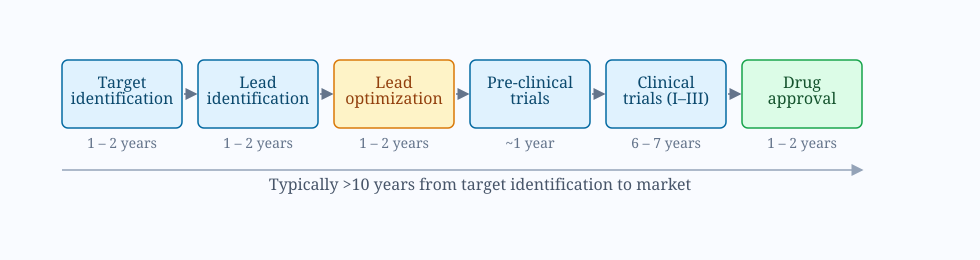
Lead optimization is inherently a multi-objective problem: we want to find molecules that are simultaneously:
Wet-lab experiments are expensive and take a lot of time.
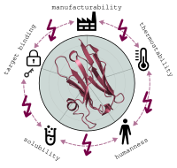
Dominance · Pareto front · Trade-offs
We want to simultaneously optimize (here w.l.o.g. maximize) $M$ competing black-box functions $$\mathbf{f}(\mathbf{x}) = (f_1(\mathbf{x}), \dots, f_M(\mathbf{x})) \in \mathcal{Y} \subseteq \mathbb{R}^M,$$ as a function of a design variable $\mathbf{x} \in \mathcal{X} \subseteq \mathbb{R}^D$.
Notation
$M$ = number of objectives
$D$ = number of input dimensions
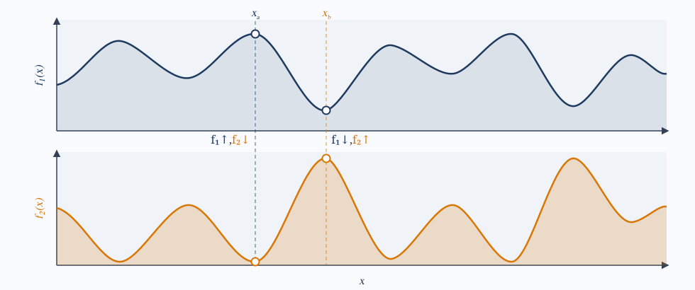
Improving one objective may worsen another ⭢ we need to find trade-offs.
Let $\mathbf{y}, \mathbf{y}' \in \mathcal{Y}$ be observed vectors. We say that $\mathbf{y}$ dominates $\mathbf{y}'$, written $\mathbf{y} \succ \mathbf{y}'$, when $\mathbf{y}$ is at least as good in every objective and strictly better in at least one:
$$\mathbf{y} \succ \mathbf{y}' \;\iff\; \forall\,m:\; y_m \geq y'_m \;\;\text{and}\;\;\exists\,m':\; y_{m'} > y'_{m'}$$
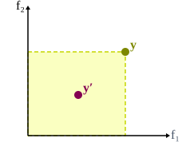
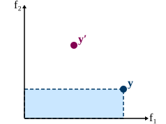
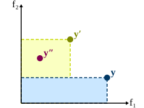
The Pareto set \(\mathcal{P}\) is the set of objective vectors \(\mathbf{y} \in \mathcal{Y}\) that are not dominated by any other vector in \(\mathcal{Y}\):
\[\mathcal{P} = \{ \mathbf{y} \in \mathcal{Y} : \nexists\, \mathbf{y}' \in \mathcal{Y} \text{ such that } \mathbf{y}' \succ\mathbf{y} \}\]
Notation
\(\mathcal{P}\) = Pareto set (in objective space)
\(\mathcal{P}_\mathcal{D}\) = Pareto set based on data \(\mathcal{D} = \{(\mathbf{x}_n, \mathbf{y}_n)\}_{n=1}^N\)
A point is Pareto-optimal if no other feasible point improves one objective without worsening at least one other objective.
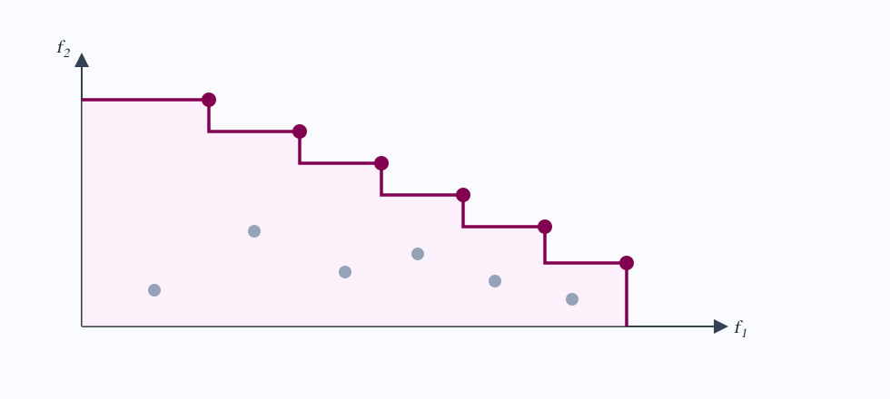
Scalarization-based · Hypervolume-based · Information-based
If we assume that objectives are correlated, we can use a multi-output GP model with a joint covariance structure across objectives, i.e.,
\[\mathbf{f} \sim \mathcal{GP}(\boldsymbol{\mu}, \mathbf{K})\]
\(\boldsymbol{\mu}: \mathbb{R}^D \to \mathbb{R}^M\): vector of mean functions
\(\mathbf{K}: \mathbb{R}^D \times \mathbb{R}^D \to \mathbb{R}^{M \times M}\): joint covariance function across objectives
Multi-output GPs are particularly relevant for multi-task and multi-fidelity learning scenarios.
Solve multiple related tasks simultaneously or consecutively by modeling them as correlated outputs of a multi-output GP.
Optimize a high-fidelity objective by leveraging cheaper low-fidelity approximations, modeled as correlated outputs of a multi-output GP. For example, simulations at different resolutions.
Model each objective independently with a separate GP, i.e.,
\[f_m \sim \mathcal{GP}(\mu_m, k_m),\quad m=1,\dots,M\]
\(\mu_m: \mathbb{R}^D \to \mathbb{R}\): mean function
\(k_m: \mathbb{R}^D \times \mathbb{R}^D \to \mathbb{R}\): covariance function of the \(m\)-th objective
Correlated models are more commonly used in multi-task learning and multi-fidelity optimization.
What should the acquisition function \(\alpha\) be?
Weighted sum · Chebyshev · ParEGO
Turn vector-valued objective $\mathbf{f} = (f_1,\dots, f_M)$ into a single objective
\[g_\theta (\mathbf{x}) = s_\theta(\mathbf{f}(\mathbf{x}))\]with scalarization function $s_\theta$ and then apply standard BO, e.g. with expected improvement (EI).
The simplest approach is a weighted sum
\[g_\theta (\mathbf{x}) = \sum_{m=1}^M \theta_m f_m(\mathbf{x})\]with the weights $\theta_m$ determining the importance of each objective. Typically, $\sum_m \theta_m = 1$.
Chevyshev scalarization focuses on reducing the largest weighted shortfall
\[g_\theta (\mathbf{x}) = \max_{m=1,\dots, M} \theta_m (f_m^{\star} - f_m(\mathbf{x}))\]of the objectives w.r.t. an "ideal" point $\mathbf{f}^\star = (f_1^{\star}, \dots, f_M^{\star})$
ParEGO uses augmented Chebyshev scalarization:
\[ g_\theta(\mathbf{x}) = \min_{m=1,\dots,M} \theta_m f_m(\mathbf{x}) + \rho \sum_{m=1}^M \theta_m f_m(\mathbf{x}) \]after normalizing $\mathbf{f}$ based on seen data.
Key steps:
Hypervolume · HVI · EHVI · PHVI
Let $Y\subset \mathcal{Y}$ be a set of observed objective vectors. We denote the associated Pareto set as \(\mathcal{P}_{Y}\). Let \(r\in\mathbb{R}^M\) be a reference point dominated by all points in \(\mathcal{P}_{Y}\).
The hypervolume of $Y$ is the Lebesgue measure of the union of hyperrectangles dominated by the Pareto set and bounded by $r$:
\[\text{HV}(Y) = \lambda_M\!\left(\bigcup_{\mathbf{y}\in\mathcal{P}_{Y}} [\mathbf{y},\, r]\right)\]
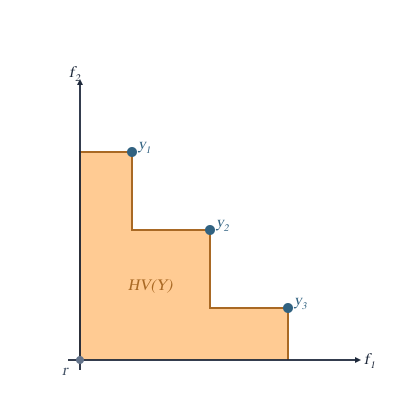
Let $Y\subset \mathcal{Y}$ be a set of observed objective vectors with Pareto set \(\mathcal{P}_{Y}\) and a candidate point \(\mathbf{y}^\star\), the hypervolume improvement (HVI) measures the increase in hypervolume if \(\mathbf{y}^\star\) is added to \(\mathcal{P}_{Y}\).
\[\text{HVI}(\mathbf{y}^\star\mid Y) = \text{HV}(Y \cup \{\mathbf{y}^\star\}) - \text{HV}(Y)\]
Note: HVI is zero for points that are dominated by the current Pareto set \(\mathcal{P}_Y\), and positive for points that expand the dominated region.
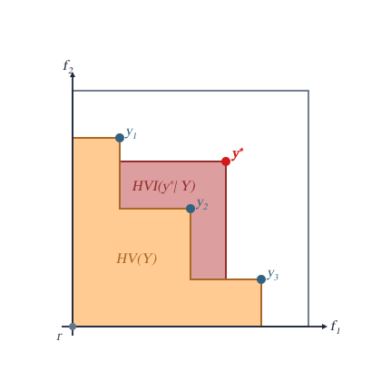
The expected hypervolume improvement of a candidate design point \(\mathbf{x}^\star\) over observed points \(Y\) is the expectation of the HVI w.r.t. the predictive distribution of \(\mathbf{f}(\mathbf{x}^\star)\),
\[\text{EHVI}(\mathbf{x}^\star\mid Y) = \mathbb{E}[\text{HVI}(\mathbf{f}(\mathbf{x}^\star)\mid Y)]\]
Intuition
EHVI quantifies how much a new design point in $\mathcal{X}$ would expand the dominated region in objective space $\mathcal{Y}$ in expectation, assuming noise-free observations.
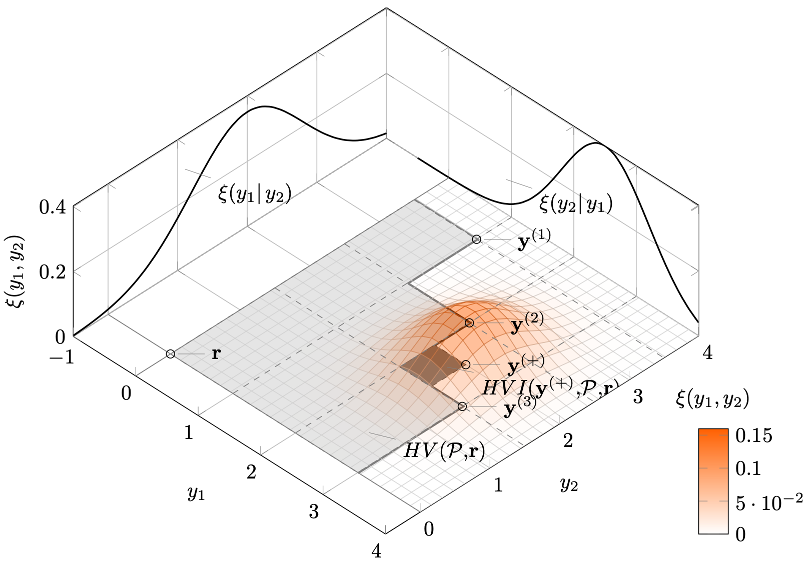
Partition the non-dominated space above the Pareto front into axis-aligned hyperrectangles \(S_1,\dots,S_K\).
Each cell \(S_k\) is bounded below by \(\mathbf{\ell}_k \in\mathbb{R}^M\) and above by \(\mathbf{u}_k \in\mathbb{R}^M\cup \{\mathbf{\infty}\}\).
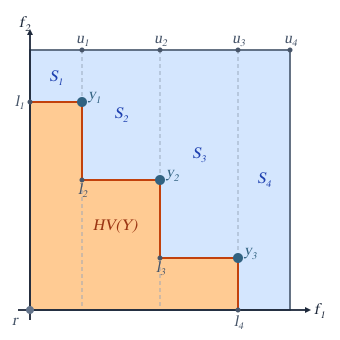
Split the HVI into intersections with the hyperrectangles \(\{S_k\}_{k=1}^K\):
\[ \begin{aligned} \text{HVI}_k &= S_k \cap \Delta(\mathbf{y}^{\star}, \mathbf{r}, \mathcal{P}_Y)\\ &= \prod_{m=1}^{M} [\min(u_k^m, y_m^{\star}) - l_k^m]_{+} \end{aligned} \]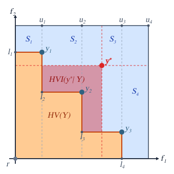
Take the expectation over the surrogate distribution of \(\mathbf{y}^{\star}\):
\[ \begin{aligned} \text{EHVI}(\mathbf{x}^{\star}\mid Y) &= \mathbb{E}[\text{HVI}(\mathbf{f}(\mathbf{x}^{\star})\mid Y)]\\ &= \sum_{k=1}^{K} \mathbb{E}\left[\prod_{m=1}^{M} [\min(u_k^m, f_m(\mathbf{x}^{\star})) - l_k^m]_{+}\right] \end{aligned} \] This expectation can be computed in closed form if the surrogates are independent GPs, but not for correlated GPs.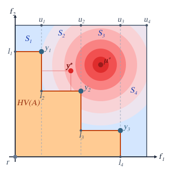
Batch acquisition strategies extend EHVI to select multiple points simultaneously, improving parallel evaluation efficiency.
Let $\Delta_i = \Delta(\mathbf{f(\mathbf{x}_i)}, \mathbf{r}, \mathcal{P}_Y), i=1,\dots,q$
\[ \begin{aligned} \text{HVI}(\mathbf{f}(\mathbf{x}), A) &= \lambda_M \left(\bigcup_{i=1}^q \Delta_i \right)\\ &= \sum_{j=1}^q (-1)^{j+1} \sum_{1\leq i_1 < \dots < i_j \leq q} \lambda_M\left(\bigcap_{s=1}^j \Delta_{i_s}\right) \end{aligned} \] and with the partitioning into hyperrectangles $\{S_k\}_{k=1}^K$ each intersection term is a the hyperrectangle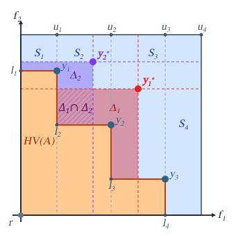
Daulton et al. (2020) claim no closed-form solution is available for $q>1$ and $M>2$, hence, Monte Carlo methods are typically used for approximation.
The computational complexity is \(O((2^q-1) MN_{\text{MC}}K)\) due to the exponential number of intersection terms in the inclusion-exclusion expansion.Assume we only get noisy observations $$\mathbf{y}_i = \mathbf{f}(\mathbf{x}_i) + \mathbf{\epsilon}_i$$ where $\mathbf{\epsilon}_i\sim\mathcal{N}(0, \Sigma_i)$ is observation noise. Then the Pareto set is no longer deterministic and we need to take the expectation of the HVI over the posterior distribution of the Pareto set: \[\text{NEHVI}(\mathbf{x}^{\star}\mid Y) = \mathbb{E}_{\mathcal{P}_Y}[\text{EHVI}(\mathbf{x}^{\star}, \mathcal{P}_Y)]\] where the expectation is taken over the posterior distribution of the Pareto set $\mathcal{P}_Y$ induced by the surrogate model and the observation noise.
NEHVI can be approximated via Monte Carlo by sampling Pareto sets from the posterior distribution \[\mathbf{f}_t \sim p(\mathbf{f} | \mathcal{D}),\quad t=1,\dots,T\] so that \[\mathcal{P}_t = \{\mathbf{f}(\mathbf{x}) \mid \mathbf{x} \in \mathcal{X}_n\ \text{s.t.}\ \nexists \mathbf{x}' \in \mathcal{X}_n : \mathbf{f}(\mathbf{x}') \succ \mathbf{f}(\mathbf{x})\}\] Averaging their EHVI values gives a Monte Carlo estimate of nEHVI: \[\text{NEHVI}(\mathbf{x}^{\star} \mid \mathcal{D}) \approx \frac{1}{T} \sum_{t=1}^T \text{EHVI}(\mathbf{x}^{\star}, \mathcal{P}_t)\]
Similarly to the single-objective case, we can also define a probability of improvement variant of HVI:
The probability that a candidate design point \(\mathbf{x}^{\star}\) improves the hypervolume over the current Pareto set \(\mathcal{P}_Y\) is given by
\[\text{PHVI}(\mathbf{x}^{\star}\mid Y) = \mathbb{P}[\text{HVI}(\mathbf{f}(\mathbf{x}^{\star})\mid Y) > 0]\]
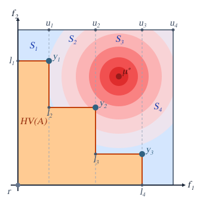
Knowledge gradient is greedy about decision quality. In standard BO, KG selects the next point that maximizes the marginal gain of the posterior mean when adding a new observation $\mathbf{x}$.
The hypervolume knowledge gradient (HV-KG) for a candidate design point \(\mathbf{x}\) is given by
\[\text{HV-KG}(\mathbf{x}, A) = \mathbb{E}_{\mathcal{D}}\left[\max_{X\subset\mathcal{X}}\text{HV}(\mathbf{\mu}(\mathbf{x}) \mid \mathcal{D}\cup\{\mathbf{x}, \mathbf{y}\})\, -\, \max_{X\subset\mathcal{X}} \text{HV} (\mathbf{\mu}(\mathbf{x}) \mid \mathcal{D})\right]\]
Naturally works for noisy observations, but requires an inner optimization loop to compute the maximum hypervolume over the design space.
PESMO · MESMO
The PESMO acquisition function quantifies the expected reduction in entropy of the Pareto front inputs \(X_{\mathcal{P}}\) after observing the outcome \(\mathbf{y}\) of a candidate design point \(\mathbf{x}\),
\[\alpha_{\text{PESMO}}(\mathbf{x}) = \mathbb{H}(X_{\mathcal{P}} \mid \mathcal{D}) - \mathbb{E}_{\mathbf{y}}\!\left[\mathbb{H}(X_{\mathcal{P}} \mid \mathcal{D}_n \cup \{(\mathbf{x}, \mathbf{y})\})\right].\]This is the expected mutual information of the new observation $(\mathbf{x}^\star, \mathbf{y}^\star)$ and the true Pareto set inputs \(X_{\mathcal{P}}\). Remember the mutual information is symmetric, \[I(A; B) = \mathbb{H}(A) - \mathbb{H}(A\mid B) = \mathbb{H}(B) - \mathbb{H}(B\mid A) = I(B; A)\] so the acquisition function can be rephrased as
\[\alpha_{\text{PESMO}}(\mathbf{x}^\star) = \mathbb{H}(\mathbf{y} \mid \mathcal{D}, \mathbf{x}) - \mathbb{E}_{X_{\mathcal{P}}}\!\left[\mathbb{H}(\mathbf{y} \mid \mathcal{D}, \mathbf{x}, X_{\mathcal{P}})\right].\]The second term \(\mathbb{E}_{X_{\mathcal{P}}}\!\left[\mathbb{H}(\mathbf{y} \mid \mathcal{D}, \mathbf{x}, X_{\mathcal{P}})\right]\) cannot be computed in closed form, hence we have to approximate it.
Computational cost: $\mathcal{O} (MTN_{\mathcal{P}}^3)$ with $M$ objectives, $T_{\text{MC}}$ samples, and $N_{\mathcal{P}}$ the dimension of the optimal Pareto set.
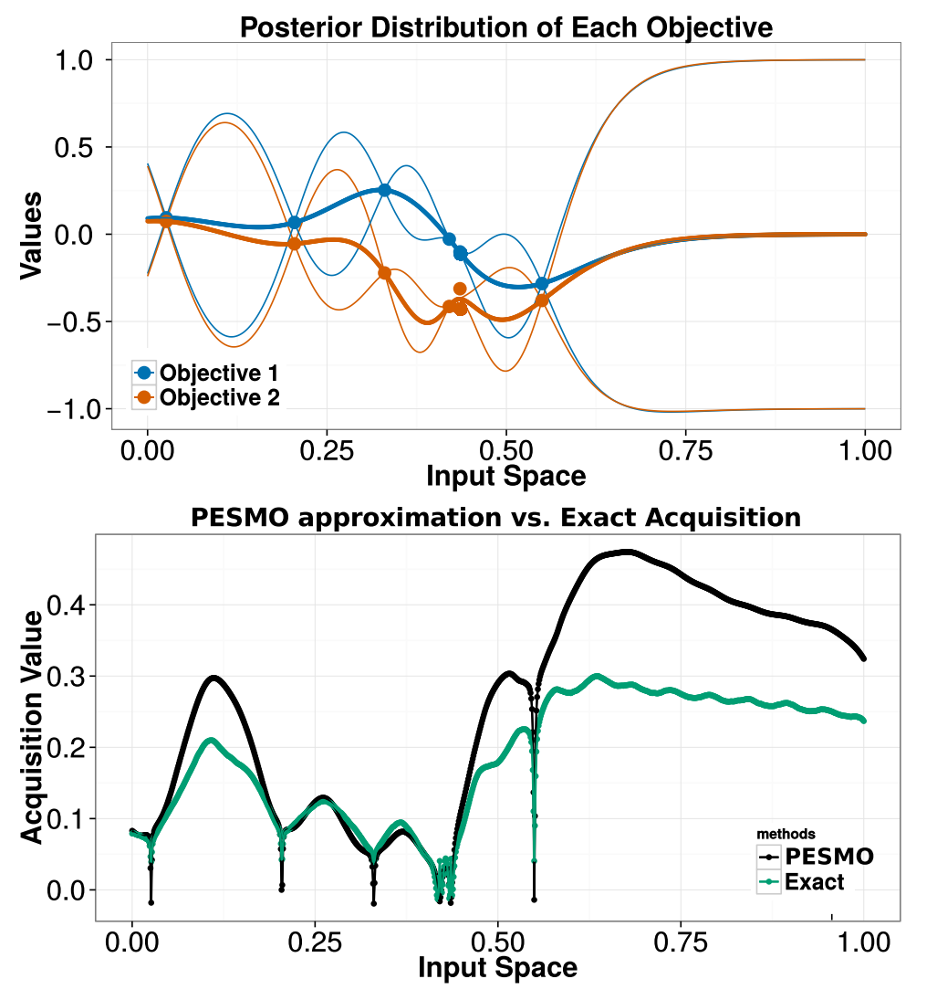
To overcome PESMO's dependence on the $N_{\mathcal{P}}D$-dimensional distribution $p(X_{\mathcal{P}} \mid \mathcal{D})$, MESMO instead considers the mutual information between the Pareto front $Y_\mathcal{P}$ and a new observation $\mathbf{y}$,
\[\alpha_{\text{MESMO}}(\mathbf{x}) = \mathbb{H}(Y_{\mathcal{P}} \mid \mathcal{D}) - \mathbb{E}_{\mathbf{y}}\!\left[\mathbb{H}(Y_{\mathcal{P}} \mid \mathcal{D}_n \cup \{(\mathbf{x}, \mathbf{y})\})\right].\]which is, again exploiting the symmetry of $I(\cdot;\cdot)$
\[\alpha_{\text{MESMO}}(\mathbf{x}^\star) = \underbrace{\mathbb{H}(\mathbf{y} \mid \mathcal{D}, \mathbf{x})}_{\text{easy}} - \underbrace{\mathbb{E}_{Y_\mathcal{P}} [\mathbb{H}(\mathbf{y}\mid \mathcal{D}, \mathbf{x}, Y_{\mathcal{P}})]}_{\text{requires approximation}}\]The second term \(\mathbb{E}_{Y_{\mathcal{P}}}\!\left[\mathbb{H}(\mathbf{y} \mid \mathcal{D}, \mathbf{x}, Y_{\mathcal{P}})\right]\) is approximated
Hence, with $\gamma_t^m (\cdot) = \frac{y_s^{\star,m} - \mu_m(\cdot)}{\sigma_m (\cdot)} $ \[\alpha_{\text{MESMO}}(\mathbf{x}) \approx \frac{1}{T}\sum_{t=1}^T\sum_{m=1}^M \left[\frac{\gamma_t^m (\mathbf{x}) \varphi(\gamma_t^m (\mathbf{x}))}{2\Phi(\gamma_t^m (\mathbf{x}))} - \operatorname{ln} \Phi(\gamma_t^m (\mathbf{x}))\right]\]
The computational cost is with $\mathcal{O} (MT)$ lower than the one of PESMO.
Choosing an acquisition function · Many-objective optimization · Implementation